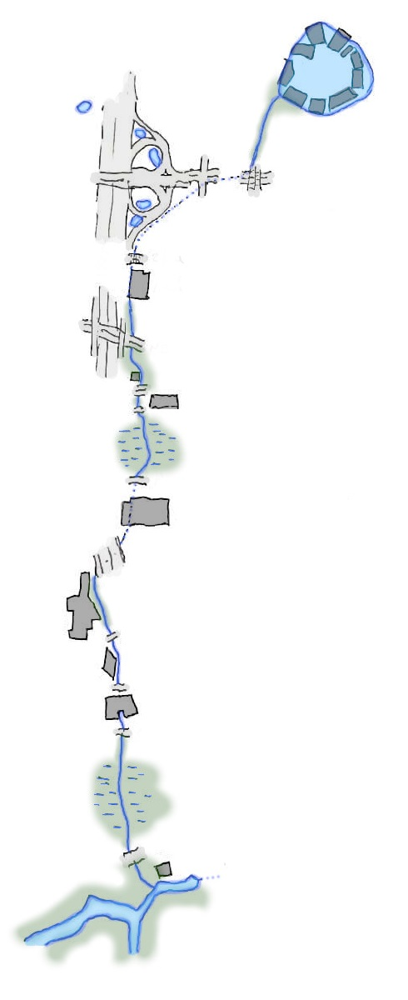

The creek rises from former industrial flats, now occupied with retail, residential, growing office buildings of the tech industry, and rail yards converted for passenger use. The small lake, ringed by pier-buildings and parking lots, marks these headwaters. Come in the evening to see the swallows hunting across the lake surface, and beavers attempting to fell massive cottonwood trees.
A short segment runs beneath a passenger rail station reflecting the trains running overhead. It then ducks underground beneath arterial streets and the freeway onramps. Take the walking path bridge paralleling the rail line, or navigate the tricky crosswalks at car-traffic level.
Waters emerge from a culvert at The Slab and weave their hidden path through blackberry thickets, between buildings, under side streets, and beneath parking lots. Don't disturb the area's residents if exploring the creek's path here.
The creek spreads into a wetland, hidden from view from the sidewalks by the stands of trees, shrubs, and grasses. It parallels the freeway looking for its chance to cross the lanes of commuter traffic.
Under the freeway, the creek finds its way, pouring through a culvert for its last major underground segment. It finally daylights along a frontage road on the other side of the freeway. Now the creek is adorned with ornament, incorporated into decorative landscaping features.
Streets, parking lots, and even an office building straddle the creek here. Its banks are concrete blocks and its bed is gravel and sand.
The creek spreads again into a concealing wetland. You can hear the ospreys overhead. Something within the brush moves.
Finally the creek joins as a tributary with another stream. Together, these flow out towards the massive lake. Here, within the wetlands that join it with the lake, the waters' flow is slowed to a crawl. Herons prowl the shallows, kingfishers hunt from above, and beavers manage the woodland.
